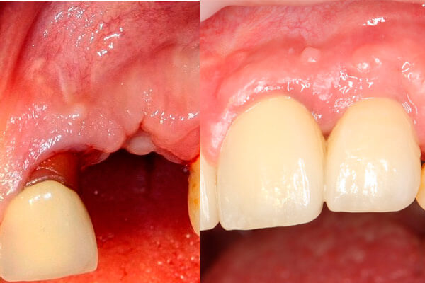
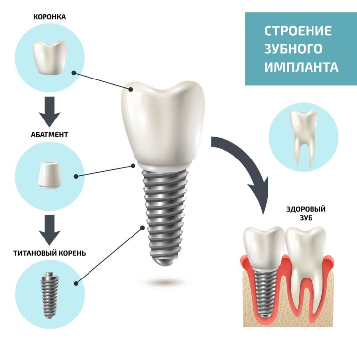
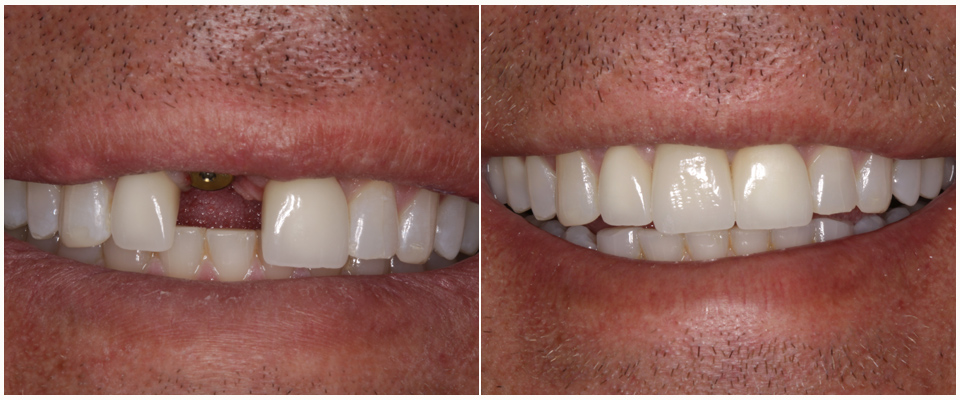

Имплантация зубов
На сегодня считаются самой современной технологией восстановления жевательной функции.
К ее преимуществам можно отнести:
- сохранение рядом стоящих зубов (устанавливая зубные протезы, врач обтачивает эмаль соседних зубов, на которых потом держится мост);
- предотвращение деформации челюсти (отсутствие зубных корней приводит к размягчению костной ткани, вследствие чего оставшиеся зубы смещаются, образуя между собой щели, меняется прикус);
- долговечность;
- эстетическая привлекательность (внешне коронка, установленная на имплант, практически неотличима от натурального зуба).

Установка имплантата зуба — поэтапно.
Процедура установки имплантата, как правило, не занимает много времени. В среднем, одного вживление искусственного корня требует от 30 до 50 минут. Весь процесс проводится в несколько этапов:
I этап:
- Подготовка костной ткани. Для этого стоматолог производит разрез десенной ткани и надкостницы лоскутным методом с помощью скальпеля или лазера, и отслаивает ее, обнажая участок кости;
- Высверливание ложа, стоматолог производит высверливание узкого канала, не более 2 мм, точно соответствующего длине имплантата;
- Вкручивание имплантата. После ввинчивания заглушающего элемента имплантат;
- Зашивание десны.
В начале может отмечаться отек и болезненность оперируемой области, которые проходят в течение 5 дней. До того момента, пока не сняты швы, необходимо исключить мучные и твердые блюда. Пока мягкие ткани полностью не восстановились, стоит избегать жевания на этой стороне.
II этап:
После внедрения имплантата через 3–5 месяцев производят установку формирователя десны. Формирователь десны является элементом, необходимым для создания естественного контура десенной ткани, которая в дальнейшем будет окружать коронку.
Данный элемент представляет собой винтовой титановый цилиндр, вкручивающийся в имплантат.
Через 2 недели, вокруг титанового элемента, образуется плотный естественный валик из десенной ткани, который будет обеспечивать нормальное функционирование искусственного зуба.
В первые дни после процедуры, возможно возникновение болезненности и небольшого кровотечения, которое проходит через 4 дня.
III этап:
Установка абатмента Абатмент представляет собой промежуточный элемент, связующий корень с коронкой. Абатмент подбирается в зависимости от ситуации. Они имеют различные размеры и формы. Процедура фиксации производится всего в два основных действия и занимает не более 15 минут.
Через пару недель после установки абатмента, возможно проведение протезирования.

Установка имплантата и протеза – это процедуры, которые требуют после себя реабилитационного периода. Зачастую он занимает не менее 5 месяцев. На всем протяжении этого времени, необходимо соблюдать некоторые правила:
- посещение стоматолога для профилактического осмотра должно быть регулярным;
- гигиеническую чистку необходимо проводить не менее одного раза в полгода; для чистки стоит использовать щетку со щетиной средней жесткости; очищение ротовой полости производят осторожными движениями с минимальным нажимом на десны в области имплантации; для проведения гигиены рта стоит включить вощеную зубную нить и асептические ополаскиватели;
- следует ограничить прием очень твердой пищи.
|